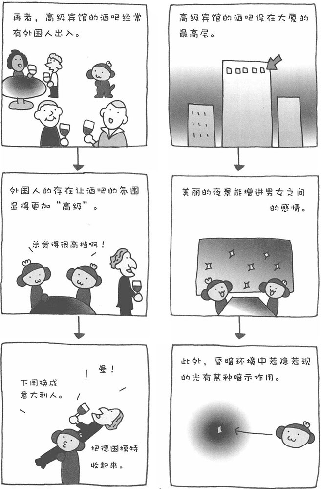

很多酒吧都设在地下，而惟独高级宾馆的酒吧设在大厦的最高层，这是为什么呢？这个问题困扰了心理学家很多年。最近，终于有心理学家通过种种实验揭开了其中的秘密。大城市的高级酒店，一般都是很高的大厦。酒吧之所以设置在最高层，是因为晚上从那里可以看见漂亮的城市夜景。看到如此美丽的夜景，人的心情也会无比舒畅。在这种状态下，对身边的人也会产生好的印象，再加上美酒、美食，效果就更强了。
此外，酒吧桌椅的摆放特点也能拉近人与人之间的距离。这样一来，饮美酒、品美食、赏美景的高级享受，就成为约会男女所共有的美好感受。再加上微暗的照明，大厦最高层的酒吧可以说是增进男女之间感情的最佳场所。再者，顾客的层次，也对酒吧的氛围有很大的影响。在高级宾馆的酒吧中，经常有外国客人出入，不知道为什么，有外国人在的地方，会让人感觉很高级。
在这样美妙的环境中，如果男士能把握好时机说一些"甜言蜜语"，准能俘获女士的芳心。举个例子，我有个朋友，人称"恋爱之神"。他和女性经过几次约会之后，总会带对方到高级宾馆的酒吧去。每当女士陶醉于美丽的夜景，不禁赞叹"这夜景真美"的时候，他总会不失时机地说上一句："夜景再美也比不上你的美。"这句话太有杀伤力了，还从来没有女性在他这句话下"逃脱"。不知不觉，主动权已经掌握在了男方的手中，而且楼下就是宾馆的客房，这更能刺激人们的情欲。不过，很多心术不正的男性也深谙这个道理，经常会在高级宾馆的酒吧为女性设下"爱情的陷阱"。女性朋友可要提高警惕。
